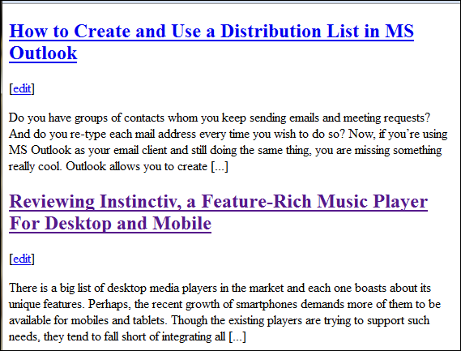

Bookmarklets are tiny JavaScript (or tiny snippets of code) that give us a nifty way to enhance our browsing experience. Like we bookmark our favorite websites, we may also bookmark our favorite bookmarklets. They reside on the browser bookmarks bar (the toolbar that’s usually below the address bar in a browser), and provide cool one-click features to the users.
In this post we are going to list out 21 such bookmarklets that could prove immensely useful depending on the kind of work you do.
Note: All the links in this article are direct bookmarklet links and you just need to drag these links to your bookmarks toolbar in the browser to start using them. However, certain bookmarklets might not be compatible with particular browsers so we’ve also given the source page for each so that you may directly install it from their official page if you face an issue installing it directly from here.
Print What You Like
Print What You Like changes the webpage into an interface for you to remove items that you would not want to print. (Source Page- printwhatyoulike.com)
Auto Fill
Auto Fill helps you fill out registration forms on websites that won’t let you step ahead without doing so. And it does so with fake or useless data! (Source Page- manni-heumann.de)
Hide Visited Hyperlinks
Hide Visited Hyperlinks hides all the hyperlinks that you have already visited on a website. (Source Page- operawiki.info)
Wikipedia Lookup
Wikipedia Lookup is a simple way to highlight certain text and search Wikipedia for details on that. (Source Page- Techmeasy)
Allow Right Click
Allow Right Click might just be the solution for those websites where a right-click is forbidden. (Source Page- subsimple.com)
Search Site
Search Site can be used to search the website for anything without even worrying about its search box. Results are via Google. (Source Page- SearchEngineJournal)
Search Google
Search Google brings up a dialog to push your keywords into Google search. No more opening Google through the address bar and then typing your keywords onto it! (Source Page- subsimple.com)
Kwout
Kwout is a brilliant way to capture and share a webpage screenshot with all links intact on the generated image. We also have a Kwout featured article here.
List Mailtos
List Mailtos lists down all the email address those are available as mailto links on the current page you are on. (Source Page- manni-heumann.de)
Goo.gl
Goo.gl lets you generate shorter URL’s for long addresses so that you may handle them ease. (Source Page- Digital Inspiration)
View Passwords
View Passwords shows the password text behind; useful when you’re typing it wrong but feel that you typed it right. (Source Page- SquareFree)
Duplicate Tab
Duplicate Tab opens the current webpage in a new tab; an easy way to start a second session. (Source Page- Techmeasy)
Split Horizontally or Vertically
Split Horizontally is an amazing way to split the browser into two horizontal halves with the current page in both halves. A nice comparison help indeed. You may want to Split Vertically as well. (Source Page- Mozilla Bookmarklets norcimo.com)
Top
Top takes you to the top level of the domain or the homepage as you may perceive. (Source Page- Squarefree)
Clippable
Clippable removes all the clutter around a webpage and enhances its readability. There’s also the Readability bookmarklet for the same. (Source Page- brettterpstra.com)
Page Zipper
Page Zipper stitches up articles that force you to click on ‘Next’ multiple times and wait for pages to render. No more reading a single article in five different pages. (Source Page- printwhatyoulike.com)
View Selection
View Selection displays a chunk of selected text in a new window/tab. (Source Page- Squarefree)

Map This
Map This is a tidy way to look for an address on Google Maps without having to navigate through the entire process. (Source Page- googlesystem.blogspot.com)
CiteBite
CiteBite is a cool way to highlight specific text on a webpage and share the new link with a friend that will take him directly to the highlighted section. (Source Page- Citebite)
Facebook Bookmarklet
Facebook Bookmarklet is a handy way of sharing a link on Facebook when the webpage does not offer one such collaboration tool. (Source Page- Facebook)
Target New Windows
Target New Windows automatically opens links that you click on in a new tab or window. (Source Page- Squarefree)
Bonus – the CC:to me bookmarklet
Here’s a bonus one – the super cool cc:to me bookmarklet for emailing stuff to yourself quickly.
Conclusion
So, that was the list of bookmarklets we thought were cool and helpful in our day-to-day browsing.
Which ones are your favorites? What other bookmarklets you use frequently that we haven’t covered in the list?